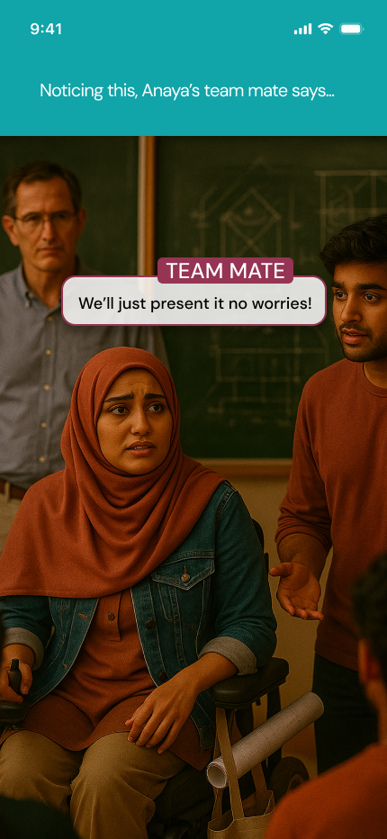
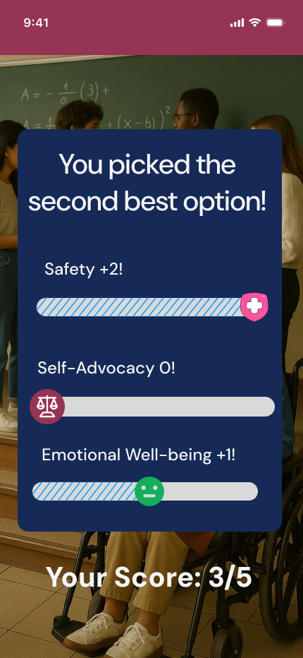
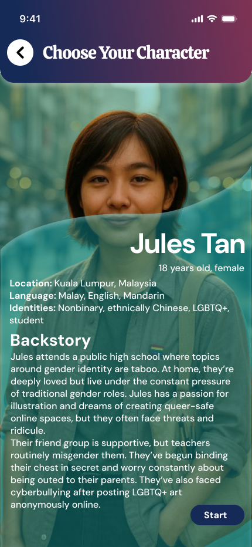

Research
Secondary research across WHO, UN DESA, Pew Research Center and NIH informed the situations and constraints represented in the stories.
An empathy-driven mobile experience that lets users step into research-grounded stories about disability, discrimination and body image — then reflect on the choices they made.
Walk In My Shoes was developed around the theme Diversity. Instead of presenting information about marginalized experiences as a passive article, the concept turns each story into an interactive situation: read, choose, experience the consequence, then reflect.
Existing empathy-building experiences often sit at two extremes: short awareness content that is easy to consume but easy to forget, or immersive training formats that require specialist hardware and structured facilitation.
The opportunity was to create something accessible on a phone while keeping the emotional weight of the subject intact.
Secondary research across WHO, UN DESA, Pew Research Center and NIH informed the situations and constraints represented in the stories.
Personas, empathy maps and journey thinking translated broad social issues into specific moments a user could encounter.
Crazy 8s helped explore interaction patterns before the core mechanic became clear: choice-led stories with visible consequences.
High-fidelity mobile screens brought together story, decision points, character context and a reflective scorecard.
Character context
Users enter a story with enough background to understand who they are stepping into.
Choice + consequence
Decision screens make the user pause, choose and live with an outcome instead of simply reading a lesson.
Reflection
A closing scorecard shifts the focus from “winning” to understanding how choices affected safety, agency and emotional well-being.
The visual language combines deep purple and maroon with warm neutrals, while teal and pink are reserved for decisions, progress and feedback. The intention was to create an interface that feels contemporary and approachable without making the subject matter feel playful for the sake of it.



This project pushed me to treat storytelling as part of the UX rather than content placed inside a UI. The final direction connects research, narrative, choice and reflection into one flow — giving the interface a clear purpose beyond simply looking polished.